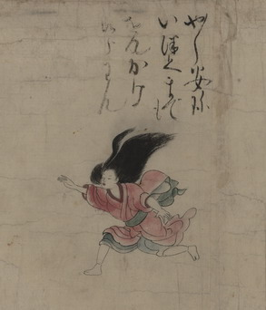

安珍を追いかける清姫。髪を逆立てて、右腕を前に伸ばしている。足元は足袋で、履き物は両脚とも脱げている。
出典：親書誌：U426_nichibunken_0152：道成寺縁起；ドウジョウジエンギ／日付：2010／資源識別子：U426_nichibunken_0152_0003_0000
Copyright (c)2010- International Research Center for Japanese Studies, Kyoto, Japan. All rights reserved.